In this codelab, you will be solving some simple I/O problems using println and readLine, while also using strings, lists, chars and integers.
Follow the instructions from last week on creating a new project in IntelliJ named C2.
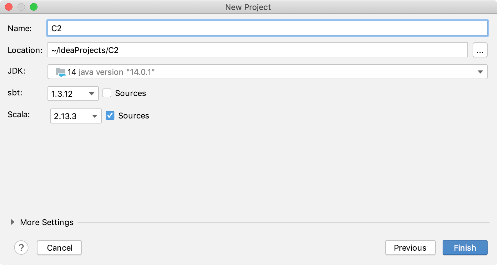
Wait for your project to load and sync, then check you can create a new Scala class.
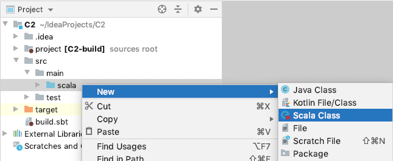
If you need a reminder or have any problems then follow the instructions from last codelab:
Write a Scala program named "Task1TripleLines" that reads in a line of numbers and prints out the numbers tripled, one per line.
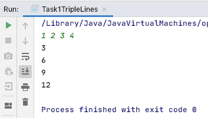
Think about the steps:
Input | Output |
3 10 2 7 33 1 | 9 30 6 21 99 3 |
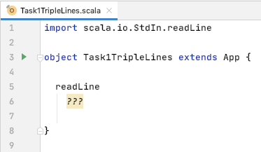
Write a Scala program named "Task2TripleString" that reads in a line of numbers and prints out the numbers tripled on one line.
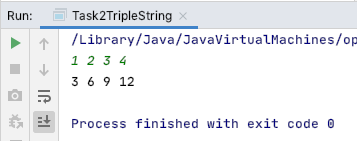
Steps:
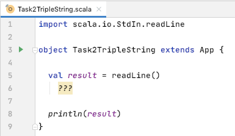
Write a Scala program to:
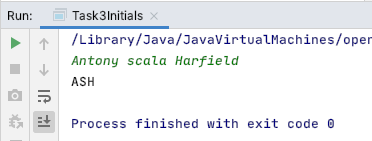
Note: toUpper for chars and toUpperCase for strings.
Write a Scala program to:
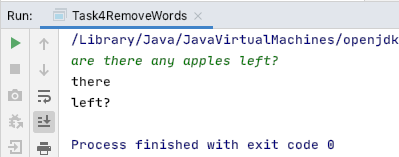
Read in multiple lines and print each one.
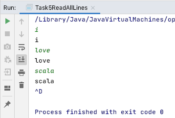
io.Source.stdin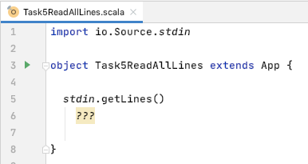
Read in file names (one per line)
.toList before .sort)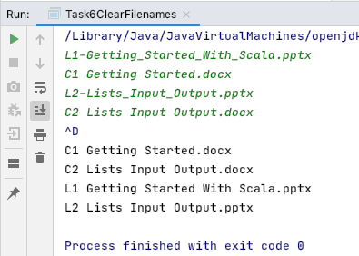
A string is a list of characters, and therefore you can use a map on a string to apply a transform to each character. Try this example:
CharsExample.scala
import scala.io.StdIn.readLine
object CharsExample extends App {
readLine().map(_.toInt).map(_ + 1).foreach(println)
}Read in a line, increment each char by 1.
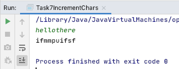
.toChar to convert from int to charWrite a Scala program to encrypt messages.
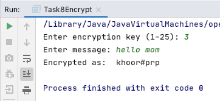
key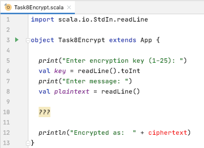
Open Google Classroom and go to C2 Submission. Copy and paste the code for each completed task.